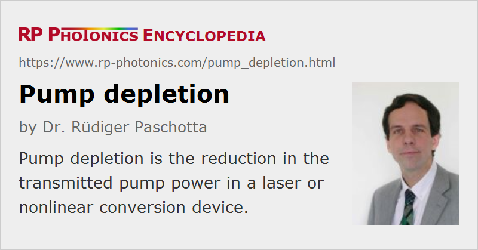

Pump Depletion
Definition: reduction in the transmitted pump power in a laser or nonlinear conversion device
German: Abnahme der Pumpleistung
Categories: nonlinear optics, lasers
How to cite the article; suggest additional literature
Author: Dr. Rüdiger Paschotta
Pump depletion is the phenomenon that the pump power for some process occurring in a device can be depleted e.g. due to conversion of the pump power into some other optical power. The term is most frequently used in the context of devices for nonlinear frequency conversion, such as frequency doubling, sum and difference frequency generation, and for optical parametric oscillators.
For example, a pump depletion of 60% in an optical parametric oscillator means that 60% of the injected pump power is converted into signal and idler power, assuming that losses through other processes are negligible. A strong pump depletion is the inevitable consequence of efficient power conversion, and the measurement of pump depletion can be useful for assessing and understanding the performance of nonlinear frequency conversion devices.
The degree of pump depletion (and thus efficiency) in some cases (e.g. for single-pass frequency doublers) rises monotonically with increasing pump power, whereas in other cases (often in OPOs, or in resonant frequency doublers) it is highest for a certain pump power. The maximum pump depletion can be limited by many effects, such as by mode matching and impedance matching of optical resonators, or transverse effects (e.g. back-conversion on the beam axis).
Questions and Comments from Users
Here you can submit questions and comments. As far as they get accepted by the author, they will appear above this paragraph together with the author’s answer. The author will decide on acceptance based on certain criteria. Essentially, the issue must be of sufficiently broad interest.
Please do not enter personal data here; we would otherwise delete it soon. (See also our privacy declaration.) If you wish to receive personal feedback or consultancy from the author, please contact him e.g. via e-mail.
By submitting the information, you give your consent to the potential publication of your inputs on our website according to our rules. (If you later retract your consent, we will delete those inputs.) As your inputs are first reviewed by the author, they may be published with some delay.
See also: nonlinear frequency conversion, optical parametric oscillators, frequency doubling, sum and difference frequency generation
and other articles in the categories nonlinear optics, lasers
|  |
If you like this page, please share the link with your friends and colleagues, e.g. via social media:
These sharing buttons are implemented in a privacy-friendly way!